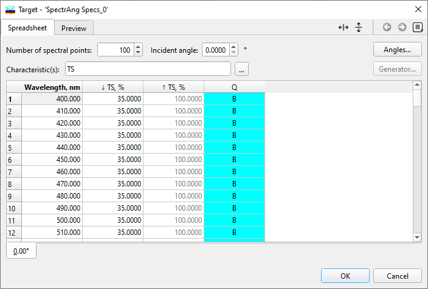
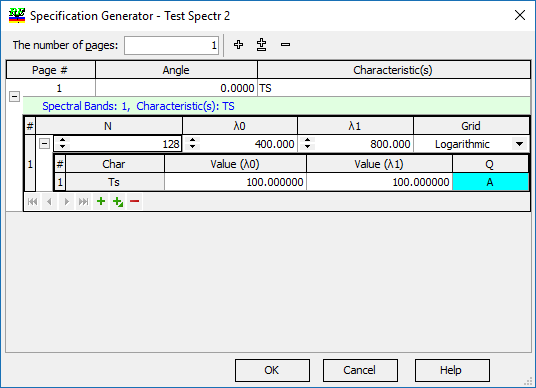

Spectral/Angular Specifications
Spectral/Angular Specifications
Navigation: OptiLayer Menu Commands > Data Menu >
Spectral/Angular Specifications
` <target_weights.html>`__ ` <idh_menu_data.html>`__ ` <specification_qualifiers.html>`__
The use of Spectral/Angular Specifications offers a practical method for ensuring that the current design meets formal technical criteria. These formal requirements may differ from the goals set for solving design challenges efficiently and quickly.

The Spectral/Angular Specification editor functions similarly to the Target Editor, with the primary distinction being the inclusion of the Q column, where non-empty qualifiers are required for specifications. Additionally, users can utilize the Specification Generator for quickly generating specifications, akin to the Target Generator but with comparable limitations concerning qualifiers.

Upon loading a Spectral/Angular Specification, it will be presented in the Evaluation window window as well as in the History and Collection windows,offering insight into the technical integrity of the current design. Specifications can also be created from Targets by clicking the “From Target…” button to access the Specifications from Target dialog.